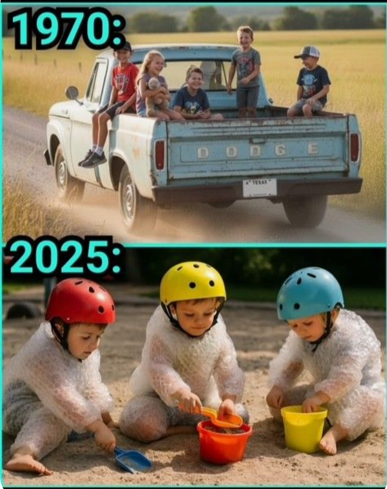

“From Free Range to Bubble Wrap”
1970: “Be home before dark.” 2025: “Be bubble-wrapped before recess.” At this rate, 2050 kids will need a helmet to eat cereal.

1970: “Be home before dark.” 2025: “Be bubble-wrapped before recess.” At this rate, 2050 kids will need a helmet to eat cereal.
